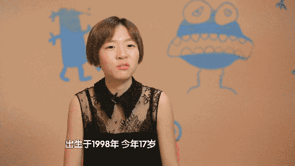

时间：2016-08-22 17:55 | 阅读：148
我从腾讯出来9年了，大概投了十几亿亿在天使投资，投资了大约130家公司，11年便有了一家公司上市(淘米。新浪科技注，下同。)，所投资的快播更是家喻户晓，还有一家公司卖了1亿美金(第七大道卖给了搜狐畅游)。在这家企业上，我们是200万投资2年变1亿人民币，交了2千万的个人所得税。
过去9年内，我们碰到过很多企业家、很多项目，有一些成功的，也有一些失败的。我发现成功总是有共性的，失败总是有各种各样的原因。我们自己也在总结，什么样的企业失败了，为什么会失败。我重点分享一下在失败中总结的经验教训。
1、不投跨行业创业
比如原来做游戏的人要做电商，原来做互联网社区的要做游戏。现在的互联网环境下，这种跨行业创业失败概率都会比较高。
可能有人会有问题说“曾总这个不对了，当年你们腾讯创业的时候也跨行业了。”对，我们创业的时候互联网行业刚刚开始，不要忘记腾讯最早也是参与深圳电信互联网建设的，马化腾在润迅是做寻呼台，CALL机和IM都很相近的，我们都是搞通讯出身的。
在这个行业比较成熟的时候，如果你进行跨行业创业往往专业经验不够，所以很容易导致失败。
即便强悍如马云跨行做社交，最后依旧折戟沉沙
2、不投综合素质不高或者核心能力不强的公司
例如，投资游戏公司，你的核心研发能力，有一项就不行，这种项目基本上成功的概率就不高。
还有一类是综合素质不高，可是有人问“你们为什么会投综合素质不高的项目?”有时候在泡沫的情况下，我们脑袋一发热就投了。我们会发现投完3个月，就后悔了，当时怎么会投这个项目呢?
去年在投资环境泡沫的情况下我们投了若干项目，导致今年上半年关公司的数量比去年多了很多。最近我发现办公室的同志怎么都换电脑了，换大屏幕的电脑了，我一问，“老板，上面的两个公司关门了，只剩下电脑，那个电脑是做美术的，屏幕都很大，都搬回来我们自己用了。”
3、不投创始人不和睦、容易分裂的公司
2、3个人合作，产品还没有出来团队就闹矛盾了。曾经有一句话“创业的伙伴关系比婚姻关系更难维持的关系”，因为婚姻关系里只需要晚上12点之前回到家，基本上是有保证的。婚姻离婚是财产对半分，资产还存在。
但是，如果创业伙伴解散了，那么我们投的钱基本上清零了，变成了一堆电脑。我现在很深刻地理解十年前IDG熊晓鸽说“创业失败什么都没有了”的话。曾经有一个做网游的公司做了，最后解散了，我们900万的投资只剩下400万，还剩下40多台的电脑。
所以说婚可以离，婚离了还有一半的资产，但是创业团队一解散，资产马上清零，这是我们的一个很典型的失败教训。
4、大学生创业不靠谱
他们没有被人管过，也就很难去管人。李开复说“成功的CEO应该是结过婚生过小孩，会结婚、会谈恋爱、会和别人沟通。有小孩，他才能学会有责任感。”
我们投过一两个大学生的创业，特别是天才级的大学生创业都比较糟糕。我们费了很多功夫和他沟通，却发现他很难去管理人，而且有这样的创始人下面会很难招到好的、有经验的人。别人会觉得这个老板刚毕业，与人沟通情商都有问题，凭什么为他服务?
我们大概有一个项目已经投了四年多，公司现在的现况和我们投资四年前基本一样。虽然没有死，但是基本上就是那么回事了。其实我们没让他关门就是为了响应政府号召“维稳”，至少提供了20多个就业机会。

5、必寻专注做好一件事
我要跟所有的创业者要说一点，创业的时候只能专心致志做好一件事。什么叫“一件事”?只能开发一个游戏，只能做一个产品。
我见过好几个项目，在第一款游戏不成功的时候做了两个、三个，本来他的成本并不大，但是同时做了两个游戏，成本就大了，现金消耗非常快，导致公司容易关门。
在电商行业，B2B和B2C的生意不能混合在一起做。德迅投资的一个很有名的失败案例是拉特兰定制衬衣项目。这个项目后来我送给了员工，现在还活着，一年赚几十万。当时在公司中有两派意见，一是直接面向企业，二是直接面向个人，所以后来B2B和B2C混合在一起做，失败了。
创业者就应该学习周鸿祎，只做好一件事情，靠这个先把用户做起来。腾讯早年就只做好了一件事情——QQ。
6、不投股份安排不合理的公司
有很多项目在创业初期股东安排就不合适，利益不均衡，没有空间容纳其他更好的人才。当我们投资的时候，他的股东结构已经是这样了，我们很痛苦，想让他再发点期权也就是一点点，很难吸收到很好的人才。
过去几年，我们还曾经试图花钱去买旧股，重新调整股东结构，我们花了几十万、上百万买了旧股调整了结构，后来无一例外都失败了。这是一个很宝贵的经验，但凡股东结构不合适，我们就不要投了。
7、创业者盲目乐观或者很封闭，不太愿意和投资人交流的容易失败
有一个创业者，规划了他做的游戏大概什么时候能够做完，然后他就认为这个肯定是没问题。我们和他沟通，他又不太愿意和我们沟通。过了一段时间我们再来看他的时候，这个项目的现金流已经快用完了。
还有一个更搞笑的项目，我们刚投完他，才过了四个月，投的200万已经花掉了一半，他同时启动了四个iOS游戏团队，本来他只做一件事情，慢慢做是有机会的。然后他自己又很有信心的说：“我肯定第一款游戏能成赚钱”，后来失败了，到第二款还是这么说，最后一个都没做起来。所以说创业的第一步就是要把自己的现金流保护好，不要盲目地乐观。
8、速度太慢导致失败
之前，有一个做端游的公司我们两年前投了它，本来计划9个月游戏做要出来，那个时候页游还没有那么火，端游还有可能成功。可是他拖延了时间，一直等到一年后，产品才出来。整个市场发生了巨大的变化，端游基本上没机会了。我所指的端游是投资率比较低的2D端游，现在只有腾讯这样的有钱人敢花5千万到1亿做的3D端游才有机会，小公司已经没有机会了。
天下武功唯快不破，如果你筹划的时间很长，市场环境在不断变化，和你当初进入市场时候的设想是完全不一样的。
9、学会隐藏自己
有一些公司，特别是创始人非常喜欢在媒体上高调曝光，导致引来了新的竞争者和巨头进入，这种公司往往会很惨的失败。举一个案例，当年淘米创业的时候，我们身边的人都不会跟别人说汪海滨(淘米创始人)在干嘛，只有他在静悄悄地做。做了一年多，直到推向市场才陆续有其他的公司知道，竞争对手后来才在追赶已经来不及了。
如果你还没有开始做就已经张扬，比如说连我都知道的“唱吧”，往往是不能成功的。大家可能一下子就涌进来，腾讯把QQ音乐一改就把你打倒了。创业一定要非常低调的进入市场，还没有获得市场成功时，千万不要太高调。做投资者可以很高调，因为我们要吸引创业者让我们投钱，但是创业者不能太高调，必须扎扎实实做你的业务，直到被迫地曝光。
因为今天有很多创业者，我想再讲一点投资者和创业者的关系。
作为南方的企业家，我们要讲“契约精神”
我们今天投你占10%的股份也好，占你20%的股份也好，占你40%的股份，只要你当时那刻是愿意的，我们双方就是公平的，不能过了一段时间，想起来了说，“哎呀你占我30%的股份多了吧”?不能够有这样的想法。
创业者要有激情的投入，也要有职业经理人的敬畏
在一个公司里，你是创业者也是CEO，CEO是为董事会、为股东去打工的，所以说你要有职业经理人的敬畏，要知道你是向董事会负责的。
合格的投资人都是创业者的良师益友
古语有云“滴水之恩当涌泉相报”，何况我们还不知道你这个“泉”涌不涌，我们还都不知道呢。